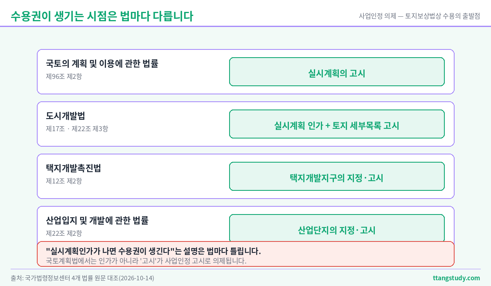

지구단위계획·실시계획인가 가이드
사업이 어느 단계에 왔는지, 그리고 수용권이 언제 생기는지

지구단위계획 건폐율·용적률 완화 한도와 실효 기간
| 항목 | 기준 | 근거 조문 |
|---|---|---|
| 지구단위계획 완화 총 상한 | 건폐율 150%, 용적률 200% | 국토계획법 시행령 제46조 제10항 / 제47조 제1항 |
| 도시지역 외 지구단위계획구역 면적 요건 | 3만 / 10만 / 30만㎡ | 국토계획법 시행령 제44조 제1항 제2호 |
| 도시지역 외 구역의 계획관리지역 비율 | 구역 면적의 50% 이상 | 국토계획법 제51조 제3항 제1호 |
| 의무 지정 | 정비구역·택지개발지구 사업 완료 후 10년 경과 (단서 있음) | 국토계획법 제51조 제2항 제1호 |
| 구역 지정 고시 후 계획 미결정 시 실효 | 3년 | 국토계획법 제53조 제1항 |
| 장기미집행 시설의 실시계획 실효 | 5년 / 7년 | 국토계획법 제88조 제7항 |
실시계획인가와 수용권 — 법별 사업인정 의제 시점
| 근거 법률 | 사업인정으로 의제되는 시점 | 조문 |
|---|---|---|
| 국토의 계획 및 이용에 관한 법률 | 실시계획의 고시 | 제96조 제2항 |
| 도시개발법 | 실시계획 인가 후 토지 세부목록 고시 | 제17조 · 제22조 제3항 |
| 택지개발촉진법 | 택지개발지구의 지정·고시 | 제12조 제2항 |
| 산업입지 및 개발에 관한 법률 | 산업단지의 지정·고시 | 제22조 제2항 |
지구단위계획·실시계획인가 확인 순서
- 토지이음에서 지구단위계획구역 여부를 확인합니다. 구역과 계획은 모두 도시·군관리계획으로 결정됩니다(국토계획법 제50조). 구역으로만 지정되고 계획이 아직 결정되지 않은 상태일 수 있습니다.
- 계획이 결정·고시되었다면 내용을 봅니다. 기반시설의 배치·규모(제52조 제1항 제2호)와 용도·건폐율·용적률·높이(같은 항 제4호)는 반드시 들어가야 하는 항목입니다. 지구단위계획구역에서는 그 계획에 맞게 건축해야 합니다(제54조).
- 완화를 기대할 때는 상한을 먼저 확인합니다. 건폐율 150%, 용적률 200%가 총 상한입니다(시행령 제46조 제10항 / 제47조 제1항). 완화만 되는 것이 아니라 강화되는 경우도 있습니다.
- 구역 지정만 되어 있고 3년이 다가온다면 실효를 봅니다. 고시 후 3년 안에 계획이 결정·고시되지 않으면 구역 지정이 효력을 잃습니다(제53조 제1항).
- 사업 단계라면 어느 법의 사업인지 특정하고, 그 법의 의제 시점을 확인합니다. 위 표의 네 가지가 서로 다릅니다. 실시계획 인가·고시가 났다고 해서 모든 사업에서 그 시점에 수용권이 생기는 것은 아닙니다.
- 도시·군계획시설이면 실효 조항도 같이 봅니다(제88조 제7항의 5년·7년).
자주 어긋나는 세 지점
"실시계획인가가 나면 수용권이 생긴다"
국토계획법에서는 인가가 아니라 실시계획의 고시가 사업인정 고시로 의제됩니다(제96조 제2항). 다른 법에서는 더 이른 단계에서 의제됩니다.
"지구단위계획은 규제를 풀어주는 제도다"
완화도 되고 강화도 됩니다. 완화에는 건폐율 150%·용적률 200%의 총 상한이 있습니다.
"구역으로 지정됐으니 계획도 나온 것이다"
구역 지정과 계획 결정은 별개이고, 3년 안에 계획이 결정되지 않으면 구역 지정 자체가 실효합니다(제53조 제1항).
용어별 상세
지구단위계획
용도지역 위에 덧씌우는 상세 계획 — 완화도 되고 강화도 됩니다
정의와 성격
「국토의 계획 및 이용에 관한 법률」 제2조 제5호 — "지구단위계획"이란 도시·군계획 수립 대상지역의 일부에 대하여 토지 이용을 합리화하고 그 기능을 증진시키며 미관을 개선하고 양호한 환경을 확보하며, 그 지역을 체계적·계획적으로 관리하기 위하여 수립하는 도시·군관리계획을 말한다.
제50조는 한 문장입니다 — "지구단위계획구역 및 지구단위계획은 도시·군관리계획으로 결정한다." 즉 지침이나 가이드라인이 아니라 법정 계획이고, 결정·고시되면 그 구역에서는 일반 용도지역 기준과 별개로 작동합니다.
언제 지정하고, 언제 반드시 지정해야 하는가
제51조 제1항은 지정할 수 있는 지역을 열거합니다 — 용도지구, 도시개발구역, 정비구역, 택지개발지구, 대지조성사업지구, 산업단지·준산업단지, 관광단지·관광특구, 개발제한구역·도시자연공원구역·시가화조정구역·공원에서 해제되는 구역, 녹지지역에서 주거·상업·공업지역으로 변경되는 구역 등입니다.
제2항은 지정해야 하는 경우입니다.
제51조② … 다음 각 호의 어느 하나에 해당하는 지역은 지구단위계획구역으로 지정하여야 한다. 다만, 관계 법률에 따라 그 지역에 토지 이용과 건축에 관한 계획이 수립되어 있는 경우에는 그러하지 아니하다.
1. 제1항제3호 및 제4호의 지역에서 시행되는 사업이 끝난 후 10년이 지난 지역
대상이 제3호(정비구역)와 제4호(택지개발지구)로 한정돼 있습니다. 도시개발구역이나 산업단지까지 포함해 설명하는 자료가 많은데 법문은 그렇지 않습니다. 그리고 단서가 자주 빠집니다 — 관계 법률에 따라 토지 이용·건축 계획이 이미 수립돼 있으면 의무가 배제됩니다.
도시지역 밖에 지정하려면 제3항의 요건을 충족해야 합니다. 그중 제1호가 "구역 면적의 100분의 50 이상이 계획관리지역"인데, 이 50%는 시행령이 아니라 법률 본문에 있습니다. 면적 요건은 시행령 제44조 제1항 제2호에 따로 있습니다 — 아파트·연립주택 건설계획이 있으면 30만㎡ 이상, 자연보전권역이거나 초등학교 용지 확보 등의 경우 10만㎡ 이상, 그 외에는 3만㎡ 이상입니다.
내용 — 이 두 가지는 반드시 들어갑니다
제52조① … 지구단위계획에는 다음 각 호의 사항 중 제2호와 제4호의 사항을 포함한 둘 이상의 사항이 포함되어야 한다. …
2. 대통령령으로 정하는 기반시설의 배치와 규모
4. 건축물의 용도제한, 건축물의 건폐율 또는 용적률, 건축물 높이의 최고한도 또는 최저한도
필수 사항이 제1항 본문에 있다는 점을 기억하십시오. 제2항은 전혀 다른 내용으로, 도로·상하수도 등 도시·군계획시설의 처리·공급·수용능력이 개발밀도와 조화를 이루도록 하라는 규정입니다.
그 밖에 담을 수 있는 것은 용도지역·용도지구의 세분·변경, 기존 용도지구 폐지와 행위제한 대체, 일단의 토지 규모와 조성계획, 건축물의 배치·형태·색채·건축선, 환경관리·경관계획, 교통처리계획 등입니다.
완화 — 한도가 정해져 있습니다
제52조③ 지구단위계획구역에서는 제76조부터 제78조까지의 규정과 「건축법」 제42조·제43조·제44조·제60조 및 제61조, 「주차장법」 제19조 및 제19조의2를 대통령령으로 정하는 범위에서 지구단위계획으로 정하는 바에 따라 완화하여 적용할 수 있다.
건축법 제44조(접도)까지 완화 대상에 들어 있다는 점을 보십시오. 다만 무제한이 아닙니다.
- 도시지역 내(시행령 제46조) — 공공시설 부지를 제공하면 제공 면적에 비례해 건폐율·용적률·높이를 완화할 수 있습니다. 그러나 제10항이 총 상한을 둡니다 — 해당 용도지역 건폐율의 150%, 용적률의 200%를 초과할 수 없습니다.
- 도시지역 외(시행령 제47조 제1항) — 마찬가지로 건폐율의 150%, 용적률의 200% 이내입니다. 다만 일부 산업·유통개발진흥지구는 건폐율의 120% 이내로 더 좁습니다.
- 도시지역 외 개발진흥지구에 지정된 구역에서는 아파트와 연립주택을 지을 수 없습니다(시행령 제47조 제2항 단서, 계획관리지역에 지정된 개발진흥지구는 제외).
반대로 강화되는 경우도 흔합니다. 지구단위계획은 완화 장치가 아니라 상세 관리 장치이기 때문에, 일반 용도지역 기준보다 층수·용도·외관이 더 까다롭게 묶이는 구역이 많습니다.
3년 안에 계획이 결정·고시되지 않으면 구역 지정이 날아갑니다
제53조① 지구단위계획구역의 지정에 관한 도시·군관리계획결정의 고시일부터 3년 이내에 그 지구단위계획구역에 관한 지구단위계획이 결정·고시되지 아니하면 그 3년이 되는 날의 다음날에 그 지구단위계획구역의 지정에 관한 도시·군관리계획결정은 효력을 잃는다.
제2항은 주민이 입안을 제안한 지구단위계획에 한해, 결정 고시일부터 5년 이내에 허가·인가·승인을 받아 사업이나 공사에 착수하지 않으면 효력을 잃고 구역 지정 당시의 도시·군관리계획으로 환원된다고 정합니다.
조문 번호를 헷갈리지 마십시오. 제53조가 실효, 제54조가 건축입니다. 2015년 제목 개정이 있어서 오래된 자료에는 반대로 적힌 것이 많습니다. 제54조는 "지구단위계획구역에서 건축물을 건축 또는 용도변경하거나 공작물을 설치하려면 그 지구단위계획에 맞게 하여야 한다. 다만, 지구단위계획이 수립되어 있지 아니한 경우에는 그러하지 아니하다"는 규정입니다.
근거 법령
| 조문 | 핵심 내용 |
|---|---|
| 국토계획법 제2조 제5호 | 지구단위계획 = 대상지역의 일부에 대해 수립하는 도시·군관리계획 |
| 국토계획법 제50조 | 지구단위계획구역과 지구단위계획은 도시·군관리계획으로 결정 |
| 국토계획법 제51조 제2항 제1호 | 정비구역·택지개발지구 사업 완료 후 10년 경과 시 의무 지정 (단서 있음) |
| 국토계획법 제51조 제3항 제1호 | 도시지역 외는 구역 면적의 50% 이상이 계획관리지역일 것 |
| 국토계획법 시행령 제44조 제1항 제2호 | 도시지역 외 면적 요건 — 3만 / 10만 / 30만㎡ |
| 국토계획법 제52조 제1항 | 제2호(기반시설 배치·규모)와 제4호(용도·건폐율·용적률·높이)는 필수 포함 |
| 국토계획법 시행령 제46조 제10항 / 제47조 제1항 | 완화 총 상한 — 건폐율 150%, 용적률 200% |
| 국토계획법 제53조 제1항 | 구역 지정 고시 후 3년 내 계획 미결정 시 구역 지정 실효 |
| 국토계획법 제54조 | 지구단위계획구역에서는 그 계획에 맞게 건축 (계획 미수립 시 제외) |
계약 전에 확인할 것
- 토지이용계획확인서에 '지구단위계획구역' 표시가 있으면 지자체에서 지구단위계획 결정도서(지침과 계획도)를 직접 받아 봅니다. 확인서만으로는 내용을 알 수 없습니다.
- 구역으로 지정만 되고 계획이 아직 결정·고시되지 않았다면 지정 고시일을 확인합니다. 3년이 지나면 지정 자체가 실효됩니다.
- 지침상 건축물 용도·높이·외관 제한이 일반 용도지역 기준보다 강한지 약한지 비교합니다. 완화만 있는 것이 아닙니다.
- 완화를 기대한다면 공공시설 부지 제공 등 조건이 붙는지, 그리고 건폐율 150%·용적률 200% 상한을 넘지 않는지 계산해 봅니다.
실시계획인가
사업이 확정 단계로 넘어갔다는 신호 — 다만 수용권이 생기는 시점은 법마다 다릅니다
무엇을 인가받는 것인가
개발사업은 보통 ① 구역·지구 지정 → ② 개발계획 수립 → ③ 실시계획 작성·인가 → ④ 공사 → ⑤ 준공 순으로 갑니다. 실시계획은 그 중 "실제로 이렇게 짓겠다"는 구체적인 설계도에 해당하고, 이것을 행정청이 승인해 주는 것이 실시계획인가입니다.
「국토의 계획 및 이용에 관한 법률」 제88조(실시계획의 작성 및 인가 등)
① 도시·군계획시설사업의 시행자는 … 그 도시·군계획시설사업에 관한 실시계획(이하 "실시계획"이라 한다)을 작성하여야 한다.
② 도시·군계획시설사업의 시행자(국토교통부장관, 시·도지사와 대도시 시장은 제외한다)는 … 국토교통부장관, 시·도지사 또는 대도시 시장의 인가를 받아야 한다.
도시개발사업이라면 근거가 다릅니다. 「도시개발법」 제17조 제1항·제2항이 같은 구조로 실시계획 작성과 지정권자의 인가를 규정하고, 이 경우 실시계획에 지구단위계획이 포함되어야 합니다.
'인가'인 법과 '승인'인 법
용어가 섞여 쓰이는데, 법률마다 다릅니다. 국토계획법과 도시개발법은 인가, 나머지 대부분은 승인입니다.
| 법률 | 조문 | 용어 |
|---|---|---|
| 국토의 계획 및 이용에 관한 법률 | 제88조 | 실시계획 인가 |
| 도시개발법 | 제17조 | 실시계획 인가 |
| 택지개발촉진법 | 제9조 | 실시계획 승인 |
| 산업입지 및 개발에 관한 법률 | 제17조~제19조 | 개발실시계획 승인 |
| 경제자유구역법 | 제9조 | 실시계획 승인 |
고시·공고문을 읽을 때 "실시계획 승인"이라고 돼 있으면 국토계획법이 아닌 다른 법의 사업이라는 뜻입니다. 그 차이가 다음 항목에서 중요해집니다.
핵심 — 수용권은 언제 생기는가
토지 소유자 입장에서 실시계획인가가 중요한 이유는 하나입니다. 내 땅이 강제로 수용될 수 있는 단계인가.
국토계획법상 도시·군계획시설사업이라면 답은 명확합니다. 근거는 제88조가 아니라 제96조 제2항입니다.
「국토의 계획 및 이용에 관한 법률」 제96조 ② … 제91조에 따른 실시계획을 고시한 경우에는 「공익사업을 위한 토지 등의 취득 및 보상에 관한 법률」 제20조제1항과 제22조에 따른 사업인정 및 그 고시가 있었던 것으로 본다. 다만, 재결 신청은 … 실시계획에서 정한 도시·군계획시설사업의 시행기간에 하여야 한다.
정확히 말하면 인가 처분이 난 때가 아니라 제91조에 따라 실시계획이 고시된 때입니다. 토지보상법 제22조 제3항이 "사업인정은 고시한 날부터 효력이 발생한다"고 정하고 있기 때문입니다.
헌법재판소도 이 구조를 합헌으로 판단했습니다(헌재 2007. 11. 29. 선고 2006헌바79). 도시계획시설사업 자체에 공공필요성이 인정되고 의견청취·관계기관 협의 절차가 마련돼 있으므로 실시계획 인가를 사업인정으로 의제해도 적법절차원칙과 헌법 제23조 제3항에 위반되지 않는다는 취지입니다.
다른 법에서는 더 일찍 생깁니다
여기서 많이들 틀립니다. "실시계획인가가 나야 수용권이 생긴다"는 설명을 다른 사업에 그대로 옮기면 안 됩니다.
| 법률 | 사업인정이 의제되는 시점 | 근거 |
|---|---|---|
| 국토계획법 | 실시계획 고시 | 제96조 제2항 |
| 도시개발법 | 수용 대상 토지 세부목록 고시 | 제22조 제3항 |
| 택지개발촉진법 | 택지개발지구 지정·고시 | 제12조 제2항 |
| 산업입지법 | 산업단지 지정·고시(또는 세부목록 고시) | 제22조 제2항 |
택지개발이나 산업단지는 실시계획 승인보다 훨씬 앞선 '지구·단지 지정' 단계에서 이미 사업인정이 의제됩니다. 즉 그런 사업에서는 실시계획 승인을 기다릴 것 없이, 지정 고시가 난 순간 이미 수용 절차가 열려 있는 셈입니다.
장기미집행 시설이라면 실효 조항도 보십시오
도시·군계획시설결정 고시일부터 10년이 지난 뒤 실시계획을 인가받은 시행자가 실시계획 고시일부터 5년 이내에 재결신청을 하지 않으면 그 실시계획은 5년이 지난 다음 날 효력을 잃습니다(국토계획법 제88조 제7항). 토지 면적의 3분의 2 이상을 확보한 경우에는 7년입니다. 오래 묶여 있던 땅이라면 이 조항의 기산일을 확인할 필요가 있습니다.
근거 법령
| 조문 | 핵심 내용 |
|---|---|
| 국토의 계획 및 이용에 관한 법률 제88조 | 실시계획의 작성 및 인가 |
| 같은 법 제91조 | 실시계획의 고시 |
| 같은 법 제96조 제2항 | 실시계획 고시 = 토지보상법상 사업인정 및 고시 의제 |
| 같은 법 제88조 제7항 | 장기미집행 시설의 실시계획 실효 (5년 / 7년) |
| 도시개발법 제17조·제22조 제3항 | 실시계획 인가 / 세부목록 고시 시 사업인정 의제 |
| 택지개발촉진법 제12조 제2항 | 택지개발지구 지정·고시 시 사업인정 의제 |
| 산업입지 및 개발에 관한 법률 제22조 제2항 | 산업단지 지정·고시 시 사업인정 의제 |
계약 전에 확인할 것
- 고시문 제목에서 근거 법률을 먼저 확인합니다. '인가'인지 '승인'인지로 법이 갈립니다.
- 국토계획법 사업이면 실시계획 '고시'일을 확인합니다. 인가일이 아니라 고시일이 기준입니다.
- 택지개발·산업단지라면 지구·단지 지정 고시일을 확인합니다. 그 시점에 이미 수용 절차가 열려 있습니다.
- 보상계획 열람 공고가 났는지 확인합니다. 이의 제기에는 기한이 있습니다.
※ 위 조문은 2026-10-14 국가법령정보센터 원문과 대조한 내용입니다. 법령은 개정될 수 있고, 조례로 기준이 달라지는 항목은 해당 시·군·구 조례를 직접 확인하십시오.
이 주제로 막힌 물건이 있으십니까? 커뮤니티에 상황을 남겨주시면 확인 순서를 같이 짚어 드립니다.
발행 2026-11-14 · 최종 확인 2026-11-17